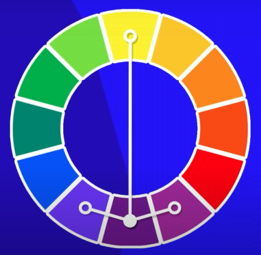

Harmonia das cores
Cores primárias
Cores secundárias
Cores terciárias
Cores frias e quentes
Cores complementares
Cores análogas
Cores análogas e complementares

Cores análogas relacionadas
Cores intercaladas
Cores em triádicas
Cores em quadradas
Cores tetrádicas
Monocromia